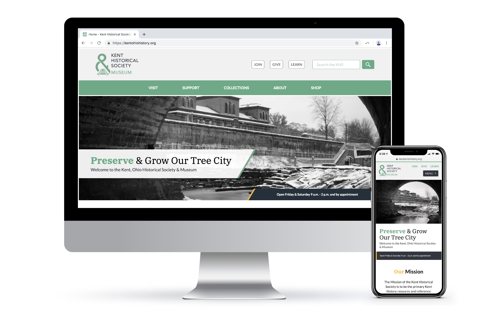

Kent Historical Society is a "not you grandma's historical society" located in Kent, Ohio. This vibrant group of preservationists and history buffs was looking for a new website to fit their needs and attitudes. Working with a team of designers and content management specialists, the UX team sought out to develop a new website for the organization.

Upon consulting with KHS members, our team determined the needs of the organization. The old site was too cluttered with an over abundance of information. One of our main goals of the UX team was to fix disorganization through a complete audit of relevant content. Out team worked hard conducting user interviews to develop categories that make sense. We used that feedback to create wireframes, test them and eventually develop the final website code.